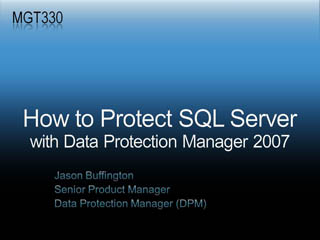

Keynote: Dynamic IT for the People-Ready Business

 Speaker(s): Bob Muglia
Speaker(s): Bob Muglia
The Fortified Data Center in Your Future
Speaker(s): Steve Riley
Windows Server 2008 Deployment Overview

 Speaker(s): Michael Niehaus, Tim Mintner
Speaker(s): Michael Niehaus, Tim Mintner
New Cryptography: Algorithms, APIs, and Architecture

 Speaker(s): Rafal Lukawiecki
Speaker(s): Rafal Lukawiecki
Managing Windows Server 2008 with Server Manager
Speaker(s): Dan Harman
Microsoft Office SharePoint Server 2007 Overview
Speaker(s): Thomas Rizzo
Microsoft SoftGrid Application Virtualization

 Speaker(s): Chad Jones
Speaker(s): Chad Jones
Microsoft IT - Identity Management and Access Management

 Speaker(s): Brian Puhl
Speaker(s): Brian Puhl
Predictive Analytics with Microsoft SQL Server 2005
 Speaker(s): Donald Farmer
Speaker(s): Donald Farmer
Windows Mobile 6 Security In-Depth
Speaker(s): Steve Riley
Making the Tradeoff: Be Secure or Get Work Done
 Speaker(s): Steve Riley
Speaker(s): Steve Riley
Virus Scanning and Content Filtering for Microsoft Office SharePoint Server 2007
 Speaker(s): Scot Hillier
Speaker(s): Scot Hillier
Microsoft Windows PowerShell Scripting for Microsoft Exchange Server 2007
 Speaker(s): Evan Dodds
Speaker(s): Evan Dodds
Using Group Policy with Windows and Windows Server 2008

 Speaker(s): Mazhar Mohammed, Derek Melber
Speaker(s): Mazhar Mohammed, Derek Melber
Windows Internet Explorer 7 Security In-Depth

 Speaker(s): Markellos Diorinos
Speaker(s): Markellos Diorinos
Microsoft Windows PowerShell: The Future of Server Administration
 Speaker(s): Don Jones
Speaker(s): Don Jones
Deploying and Managing a Windows-based High-Performance Compute Cluster

 Speaker(s): Doug Lindsey
Speaker(s): Doug Lindsey
Using Zero Touch Provisioning
 Speaker(s): David Clark
Speaker(s): David Clark
Developing More Intelligent Applications with Data Mining
Speaker(s): Rafal Lukawiecki
Secrets to Fast Detection and Recovery from Database Corruptions
 Speaker(s): Paul Randal
Speaker(s): Paul Randal
Microsoft.com: Employing Windows Server 2008 and Internet Information Services 7
 Speaker(s): Paul Wright, Brad LeRoss
Speaker(s): Paul Wright, Brad LeRoss
Planning a Successful Microsoft Operations Manager 2007 Deployment with Microsoft System Center Capacity Planner 2007

 Speaker(s): Dale Koetke
Speaker(s): Dale Koetke
Microsoft System Center Data Protection Manager (DPM) 2007: How to Protect Microsoft SQL Server

Speaker(s): Jason Buffington